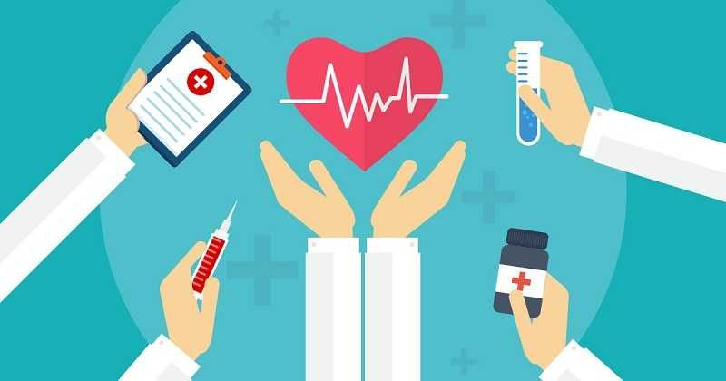

Definições: Saúde
Quando a Organização Mundial da Saúde foi criada, pouco após o fim da Segunda Guerra Mundial, havia uma preocupação em traçar uma definição positiva de saúde, que incluiria fatores como alimentação, atividade física, acesso ao sistema de saúde e etc. O "bem-estar social" da definição veio de uma preocupação com a devastação causada pela guerra, assim como de um otimismo em relação à paz mundial — a Guerra Fria ainda não tinha começado. A OMS foi ainda a primeira organização internacional de saúde a considerar-se responsável pela saúde mental, e não apenas pela saúde do corpo. A definição adotada pela OMS tem sido alvo de inúmeras críticas desde então. Definir a saúde como um estado de completo bem-estar faz com que a saúde seja algo ideal, inatingível, e assim a definição não pode ser usada como meta pelos serviços de saúde. Alguns afirmam ainda que a definição teria possibilitado uma medicalização da existência humana, assim como abusos por parte do Estado a título de promoção de saúde.
Por outro lado, a definição utópica de saúde é útil como um horizonte para os serviços de saúde por estimular a priorização das ações. A definição pouco restritiva dá liberdade necessária para ações em todos os níveis da organização social. Christopher Boorse definiu em 1977 a saúde como a simples ausência de doença; pretendia apresentar uma definição "naturalista". Em 1981, Leon Kass questionou que o bem-estar mental fosse parte do campo da saúde; sua definição de saúde foi: "o bem-funcionar de um organismo como um todo", ou ainda "uma actividade do organismo vivo de acordo com suas excelências específicas." Lennart Nordenfelt definiu em 2001 a saúde como um estado físico e mental em que é possível alcançar todas as metas vitais, dadas as circunstâncias.
As definições acima têm seus méritos, mas, provavelmente, a segunda definição mais citada também é da OMS, mais especificamente do Escritório Regional Europeu: A medida em que um indivíduo ou grupo é capaz, por um lado, de realizar aspirações e satisfazer necessidades e, por outro, de lidar com o meio ambiente. A saúde é, portanto, vista como um recurso para a vida diária, não o objetivo dela; abranger os recursos sociais e pessoais, bem como as capacidades físicas, é um conceito positivo. Essa visão funcional da saúde interessa muito aos profissionais de saúde pública, incluindo-se aí os médicos, enfermeiros, fisioterapeutas e os engenheiros sanitaristas, e de atenção primária à saúde, pois pode ser usada de forma a melhorar a eqüidade dos serviços de saúde e de saneamento básico, ou seja, prover cuidados de acordo com as necessidades de cada indivíduo ou grupo.
A saúde mental (ou sanidade mental) é um termo usado para descrever um nível de qualidade de vida cognitiva emocional ou a ausência de uma doença mental. Na perspectiva da psicologia positiva ou do holismo, a saúde mental pode incluir a capacidade de um indivíduo de apreciar a vida e procurar um equilíbrio entre as actividades e os esforços para atingir a resiliência psicológica.A Organização Mundial de Saúde afirma que não existe definição bem clara sobre o que é a saúde mental. Diferenças culturais, julgamentos subjectivos, e teorias relacionadas concorrentes afectam o modo como a "saúde mental" é definida.
Determinantes da saúde

O relatório Lalonde sugere que existem quatro determinantes gerais de saúde, incluindo biologia humana, ambiente, estilo de vida e assistência médica. Assim, a saúde é mantida e melhorada, não só através da promoção e aplicação da ciência da saúde, mas também através dos esforços e opções de vida inteligentes do indivíduo e da sociedade. O Alameda County Study analisa a relação entre estilo de vida e saúde. Descobriu que as pessoas podem melhorar a sua saúde através do exercício , sono suficiente, mantendo um peso saudável, limitando o uso de álcool e evitando fumar. Um dos principais factores ambientais que afetam a saúde é a qualidade da água, especialmente para a saúde dos lactentes e das crianças em países em desenvolvimento. Estudos mostram que em países desenvolvidos, a falta de espaços de lazer no bairro que inclua o ambiente natural conduz a níveis mais baixos de satisfação nesses bairros e níveis mais elevados de obesidade e, portanto, menor bem-estar geral. Por isso, os benefícios psicológicos positivos do espaço natural em aglomerações urbanas devem ser levados em conta nas políticas públicas e de uso da terra.
De acordo com a Organização Mundial da Saúde, os principais determinantes da saúde incluem o ambiente social e econômico, o ambiente físico e as características e comportamentos individuais da pessoa. Em geral, o contexto em que um indivíduo vive é de grande importância na sua qualidade de vida e em seu estado de saúde. O ambiente social e econômico são fatores essenciais na determinação do estado de saúde dos indivíduos dado o fato de que altos níveis educacionais estão relacionados com um alto padrão de vida, bem como uma maior renda. Geralmente, as pessoas que terminam o ensino superior têm maior probabilidade de conseguir um emprego melhor e, portanto, são menos propensas ao estresse em comparação com indivíduos com baixa escolaridade. O ambiente físico é talvez o fator mais importante que deve ser considerado na classificação do estado de saúde de um indivíduo. Isso inclui fatores como água e ar limpos, casas, comunidades e estradas seguras, todos contribuindo para a boa saúde.
A percepção de saúde varia muito entre as diferentes culturas, assim quanto as crenças sobre o que traz ou retira a saúde. A OMS define ainda a Engenharia sanitária como sendo um conjunto de tecnologias que promovem o bem-estar físico, mental e social. Sabe-se que sem o saneamento básico (sistemas de água, de esgotos sanitários e de limpeza urbana) a saúde pública fica completamente prejudicada. A OMS reconhece ainda que a cada unidade monetária (dólar, euro, real, etc.) dispendida em saneamento economiza-se cerca de quatro a cinco unidades em sistemas de saúde (postos, hospitais, tratamentos,etc.) e que cerca de 80% das doenças mundiais são causadas por falta de água potável suficiente para atender as populações necessitadas.
Saúde também deve ser pensada no ambiente de trabalho
A maior parte do tempo em que estamos acordados passamos trabalhando (o brasileiro trabalha em média quase nove horas por dia). Sendo assim, é praticamente impossível pensarmos em nossa saúde sem levarmos em conta o que fazemos no trabalho, como fazemos, qual nossa posição corporal e como nos alimentamos dentro do nosso horário de expediente. Gerente de Saúde do Colaborador do Hospital Sírio-Libanês, o médico do trabalho dr. Paulo Roberto Leal explica que os trabalhadores podem adoecer como qualquer outra pessoa, considerando sua idade, seu gênero ou seu grupo social. As diferentes profissões, no entanto, podem envolver mais ou menos riscos à saúde a partir das medidas de proteção e prevenção adotadas.
Estudos já mostraram que trabalhadores com estilo de vida estressante, que fumam, têm profissões com alta exigência cognitiva, com pouco apoio social, por exemplo, correm um risco maior de necessitar de uma licença médica devido a problemas de saúde mental. Além disso, a tensão muscular, as dores nas costas e na cabeça também costumam se apresentar como problemas de saúde relacionados ao trabalho. O dr. Leal aproveita o Dia Internacional do Trabalho (1º de maio) para chamar a atenção de todos aqueles que trabalham (ou apenas navegam) várias horas em frente ao computador. “Trabalhar sentado utilizando computadores, embora não seja uma tarefa pesada do ponto de vista físico, exige muita concentração e promove tensão muscular, que chamamos de sobrecarga estática”, comenta. “Isso usualmente afeta pescoço, ombros, dorso e membros superiores e inferiores”, acrescenta.
Entre os grandes responsáveis pelos problemas posturais, estão os dispositivos portáteis (notebooks, tablets e smartphones). “Esses equipamentos são levados para todos os lugares e se igualam na praticidade e no desconforto”, comenta o dr. Leal. Para evitar as complicações mencionadas, a recomendação é: cuide de sua postura no trabalho e fora dele.
Em relação aos transtornos mentais, o dr. Leal explica que eles geralmente são causados por estresse após dificuldades de adaptação no trabalho, medo de perder o emprego ou tensão diante de atividades de risco. “O importante é que o trabalhador nunca descuide da sua saúde e lembre que o trabalho não pode provocar sofrimento, mas sim ser o meio para uma vida melhor”, avalia. “Se isso não estiver acontecendo, um médico do trabalho deve ser consultado”, completa o especialista.
Cuide da saúde dentro e fora do ambiente de trabalho
A saúde de cada um de nós é uma só. Portanto, devemos procurar atitudes saudáveis dentro e fora do ambiente de trabalho, como: